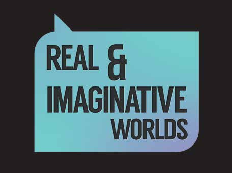

Exhibition: Real and Imaginative Worlds

Gaming is the act of playing games. A person who plays games is called a Gamer. It generally refers to video game culture, an increasingly expressive medium within modern society. This group show features diverse art practices influenced by the theme Real and Imaginative Worlds and inspired by the multi-faceted nature of playing games.
The exhibition will feature interactive works by three artists:
Vivienne Byrne A multimedia artist whose practice is explores the space between human relationships and technological communications. Her installations employ elements of drawing, sculpture, video, projections and various materials gathered from workshops.
Hilary O'Shaughnessy An artist whose work sits at the intersection of technology, performance and game design. Her interest lies in interaction led design that uses the body as a tool for design. Her work often questions our relationship with technology and definitions of public versus private space.
Jonathan Sammon A visual artist and film maker who uses drawing, sound and moving images to create narratives which draw upon his interests in literature and film.
Friday 2 May - Monday 5 May
Venue: Droichead Arts Centre, Stockwell Street
Opening: 12:00pm Fri 2 May
Times: 10:00am - 5:00pm Sat 3 & Sun 4 May
10:00am - 5:00pm Mon 5 May
After the Arts Festival the exhibition runs until June
Tickets: Free